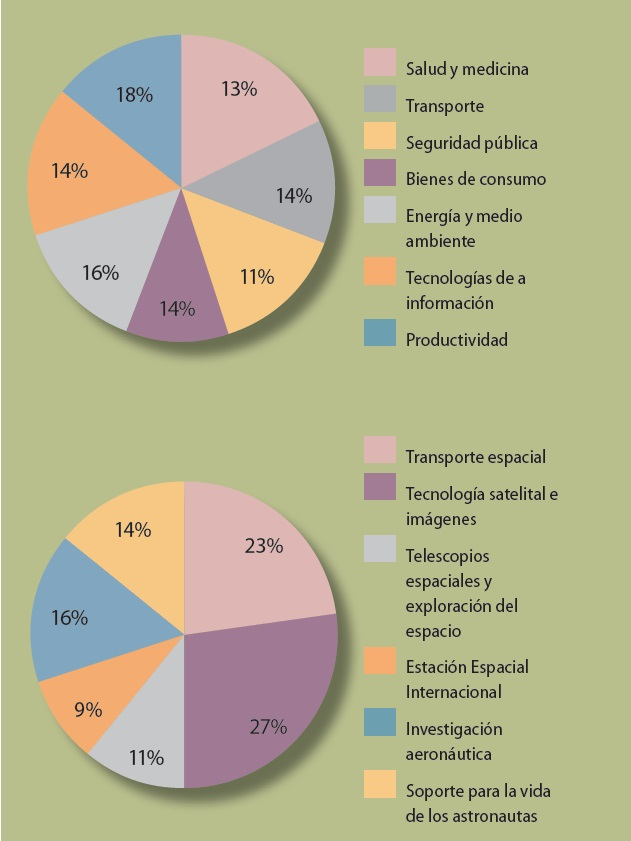

BENEFICIOS DEL ESPACIO EN NUESTRA VIDA DIARIA
Es difícil contabilizar de manera exacta los beneficios que han traído la ciencia y la tecnología espacial. Los individuos, empresas y gobiernos siguen invirtiendo cada año mucho tiempo y dinero en los objetivos de desarrollo de nuevas capacidades espaciales y en cosechar recompensas de las ya existentes. Gran parte de las actividades espaciales se centran en la preparación de nuevos programas y esfuerzos, de acuerdo a los planes espaciales de los países La industria espacial ha mantenido una tasa de crecimiento muy saludable, superando los aumentos en el gasto público. Cada vez más empresas demuestran su interés en este sector. La tecnología espacial se utiliza todos los días para hacer la vida mejor. Las personas utilizamos la tecnología de posicionamiento por satélite para agregar capas de información sobre el mundo físico, se aprovechan las aplicaciones de los teléfonos inteligentes combinadas con información satelital (GPS e imágenes) para facilitarnos cada vez mas la existencia. Se utiliza la información de satélites para actuar en la mitigación de desastres causados por fenómenos naturales, para mejorar las prácticas de riego, vigilar posibles violaciones de los derechos humanos en guerras, etc. Hay muchos factores que hacen muy valiosos los productos y servicios espaciales, los satélites ofrecen una perspectiva persistente y amplia que trasciende las barreras terrestres, nos ayudan a estar conectados y nos proporcionan información de nuestro entorno.
BENEFICIOS DE LA TECNOLOGÍA ESPACIAL EN LA SALUD
El espacio ofrece también un entorno único, en
términos de la microgravedad, radiación y otros
factores físicos, que permite la realización de un
tipo de investigación que no puede ser fácilmente
replicada en la Tierra. Permite la experimentación
sobre el comportamiento del cuerpo humano con el
objeto de crear nuevos tratamientos para diferentes
enfermedades, o nuevas terapias físicas y psicológicas que se pueden aplicar en tierra.